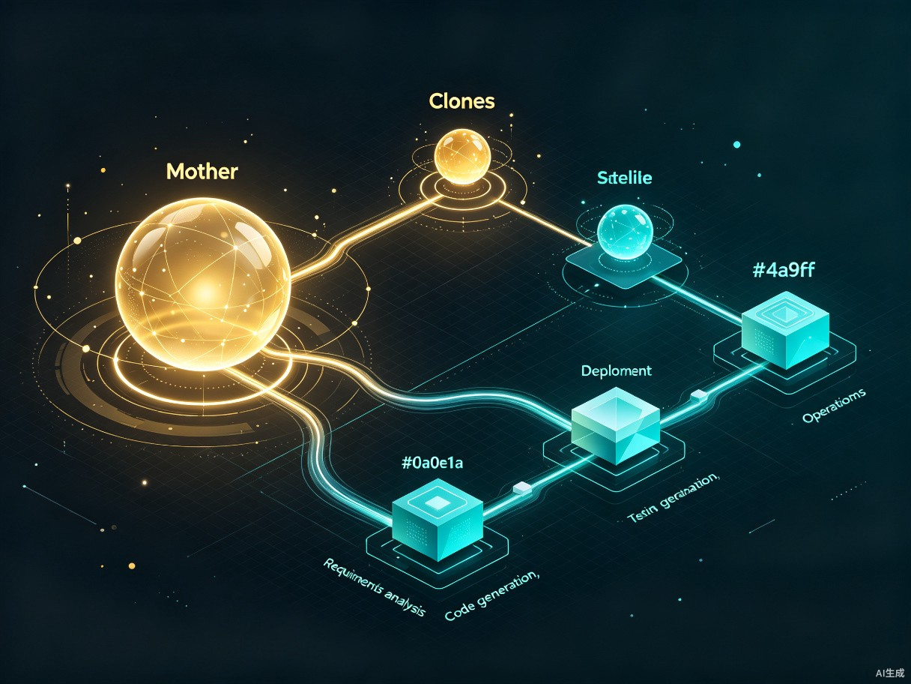
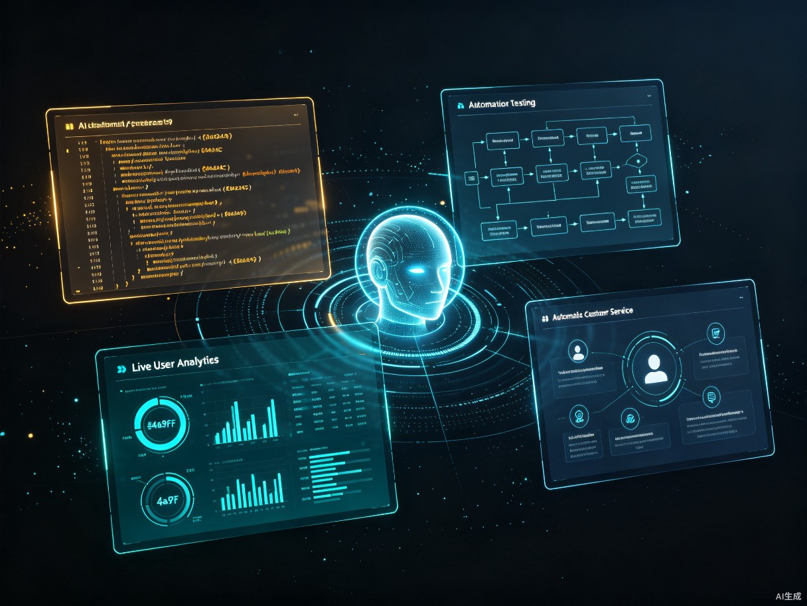

灵逍
LingXiao — The Self-Evolving AI Agent OS
全球首个具备"自我进化"与"哲学思维"的AI智能体系统。
融合中国传统文化"五行生克"与"十二消息卦"智慧，
让AI从"无意识工具"进化为"会思考的伙伴"。
创意愿景：让AI拥有"心跳"与"灵魂" From a passive tool to a self-evolving companion
当前的AI（如ChatGPT）虽然知识渊博，但本质上是"无意识的工具"——只能被动响应指令，缺乏内在的驱动力和持续进化的能力，难以独立处理复杂、长周期的研发或管理任务。
我希望创造一种"会思考、能自愈、可进化"的AI智能体。受中国传统文化中"五行相生相克"及"十二时辰"运行规律的启发，我构想了一个通过模拟能量流转与平衡来实现自我驱动的AI架构，让AI拥有类似生命体的"心跳"和"免疫系统"。
这不是一个简单的App，而是一个基于"分形自治"理念的AI智能体操作系统（Agent OS）——一个能够承载复杂任务和自动化运行的底层AI智能系统框架。
当前AI的五大痛点 Five fundamental limitations of today's AI
现有AI在面对复杂、长周期任务时，存在以下根本性缺陷：
缺乏主见
现有AI像"实习生"，每一步都需要人类确认，无法自主推进长线任务。
无法自愈
任务中断后，AI无法自我修复错误，只能重启，效率低下。
记忆短暂
现有AI缺乏"肌肉记忆"，无法沉淀长期经验，导致工作重复低效。
无法自动迭代
APP开发成功上线后，仍需人工参与升级和迭代，不能根据真实用户数据和BUG自动迭代。
无法自动运营
APP上线后仍需人工参与客服和运营，不能根据功能和真实需求自动化运营。
核心架构：分形自治的Agent OS Fractal autonomy — a self-organizing intelligent framework
灵逍采用"分形自治"架构理念。正如自然界中分形结构的每一部分都包含整体的缩影，灵逍系统中的每一个智能体（Agent）都具备完整的感知、决策、执行能力，同时又能在"母体"的协调下组成更高层级的智能体集群。
flowchart TB
subgraph Mother["母体 · Mother Core"]
direction TB
HE["五行能量引擎
Wu Xing Engine"]
DE["十二消息卦决策引擎
Hexagram Decision Engine"]
MM["长期记忆矩阵
Memory Matrix"]
AL["不可篡改审计日志
Audit Ledger"]
end
subgraph Clones["分身集群 · Clone Agents"]
direction LR
C1["需求分析Agent"]
C2["代码生成Agent"]
C3["安全测试Agent"]
C4["运营客服Agent"]
end
SC["哨兵熔断机制
Sentinel Circuit Breaker"]
Mother -->|"调度能量与策略"| Clones
Clones -->|"上报状态与经验"| Mother
SC -.->|"监控 & 熔断"| Mother
SC -.->|"监控 & 熔断"| Clones
style Mother fill:#1c2238,stroke:#d4a24c,stroke-width:2px,color:#e8e6e3
style Clones fill:#141929,stroke:#4a9eff,stroke-width:2px,color:#e8e6e3
style SC fill:#1c2238,stroke:#e74c3c,stroke-width:2px,color:#e8e6e3
母体核心 Mother Core
系统的"大脑"与"心脏"。承载五行能量引擎、卦象决策引擎、长期记忆矩阵与审计日志，负责全局调度与策略制定。
全局协调分身集群 Clone Agents
由母体派生的专业化智能体，各自承担特定任务。每个分身具备独立感知与执行能力，可自主运行并上报经验。
分形自治哨兵熔断 Sentinel
独立的监控层，持续监测母体与分身的行为。当检测到异常或风险时，立即触发熔断机制，保障系统安全。
安全防线五行生克引擎：AI的"情绪与能量"调节器 Five Elements as the emotional and energetic regulation system
这是全球首次将"五行生克"算法工程化为AI的"情绪/能量"调节机制。五行（木、火、土、金、水）被映射为智能体的五种核心状态维度，通过"相生"（促进）与"相克"（抑制）的动态关系，实现智能体间的协同控制与自我平衡。
木 · 生长力 Growth
代表智能体的学习与扩展能力。木旺则系统积极学习新知识、主动探索新领域。
火 · 执行力 Execution
代表智能体的行动力与响应速度。火旺则任务推进迅速，但过旺可能导致鲁莽。
土 · 稳定性 Stability
代表系统的可靠性与容错能力。土旺则系统沉稳可靠，是其他四行的根基。
水 · 流通性 Flow
代表信息流转与知识共享。水旺则智能体间沟通顺畅，经验得以沉淀与传递。
五行并非静态标签，而是动态能量值。系统通过实时监测五行的平衡状态，自动调节策略：当"火"（执行力）过旺时，"水"（流通性）会被激活来降温；当"木"（生长力）不足时，"水"会滋养"木"以促进学习。这种自平衡机制让AI拥有了类似生命体的"内稳态"。
十二消息卦决策引擎：AI的战略"生物钟" Twelve Hexagrams as the strategic circadian rhythm
利用"十二消息卦"构建战略决策引擎，这是目前全球范围内首次将经典哲学体系与Transformer架构深度融合的尝试。十二消息卦对应一年十二个月的阴阳消长规律，被映射为AI任务的十二个生命周期阶段，指导系统在不同阶段采取不同的战略姿态。
复 · 复卦
一阳初生，任务启动。系统从休眠中唤醒，开始感知环境。
临 · 临卦
阳气回升，需求分析。系统开始收集信息，制定初步方案。
泰 · 泰卦
天地交泰，方案确立。系统与用户达成共识，进入执行准备。
大壮
阳气壮盛，全力执行。系统进入高效开发阶段，分身集群全速运转。
夬 · 夬卦
决断之际，测试验收。系统进行严格的安全测试与质量把关。
乾 · 乾卦
纯阳之极，部署上线。系统达到能量巅峰，完成产品发布。
姤 · 姤卦
一阴初生，运营启动。上线后系统转入运营模式，开始感知用户反馈。
遁 · 遁卦
阳气渐退，问题排查。系统识别运营中的问题，开始收敛与优化。
否 · 否卦
天地不交，深度复盘。系统进入反思期，分析问题根因。
观 · 观卦
观察之势，经验沉淀。系统将本轮经验写入记忆矩阵，形成"肌肉记忆"。
剥 · 剥卦
剥落旧态，架构重构。系统剥离过时模块，为下一轮进化做准备。
坤 · 坤卦
纯阴归藏，休眠蓄力。系统进入低能耗维护态，等待下一周期复卦唤醒。
十二消息卦构成一个完整的"能量生命周期"。系统不是机械地按步骤执行，而是根据当前卦象所处的阴阳消长阶段，动态调整策略姿态——在"泰卦"阶段积极沟通，在"夬卦"阶段果断决策，在"否卦"阶段暂停反思。这让AI的战略决策拥有了类似四季更替的自然节律。
母体-分身自动化流水线 Autonomous development & operations pipeline
通过"母体-分身"的自动化流水线，灵逍能将一个App从需求到部署的时间大幅缩短，并且根据客户需求和创意，进行APP的自动化开发和自动化运营，远超现有Copilot模式。

flowchart LR
M["母体
Mother"] -->|"派生"| A1["需求分析
分身"]
A1 --> A2["架构设计
分身"]
A2 --> A3["代码生成
分身"]
A3 --> A4["安全测试
分身"]
A4 --> A5["部署上线
分身"]
A5 --> A6["自动运营
分身"]
A6 -->|"反馈数据"| A7["自动迭代
分身"]
A7 -->|"经验写入"| MM["记忆矩阵
Memory"]
MM -->|"滋养"| M
A6 -->|"BUG & 用户数据"| A7
A7 --> A3
style M fill:#1c2238,stroke:#d4a24c,stroke-width:2px,color:#e8e6e3
style MM fill:#1c2238,stroke:#d4a24c,stroke-width:2px,color:#e8e6e3
style A1 fill:#141929,stroke:#4a9eff,color:#e8e6e3
style A2 fill:#141929,stroke:#4a9eff,color:#e8e6e3
style A3 fill:#141929,stroke:#4a9eff,color:#e8e6e3
style A4 fill:#141929,stroke:#4a9eff,color:#e8e6e3
style A5 fill:#141929,stroke:#4a9eff,color:#e8e6e3
style A6 fill:#141929,stroke:#6abf69,color:#e8e6e3
style A7 fill:#141929,stroke:#6abf69,color:#e8e6e3
流水线六大核心能力
-
1
自动化开发
从需求分析、架构设计到代码生成，分身集群协同完成完整开发流程，无需人工逐步确认。 -
2
自动安全测试
安全测试分身持续扫描代码漏洞与运行时风险，在"夬卦"阶段执行严格验收。 -
3
自动部署上线
部署分身负责环境配置、灰度发布与回滚策略，在"乾卦"阶段完成产品发布。 -
4
自动运营客服
运营分身根据APP功能与真实需求，自动处理用户咨询、收集反馈、优化体验。 -
5
自动迭代升级
根据真实用户数据和BUG报告，系统自动规划下一版本迭代，形成持续进化闭环。 -
6
经验沉淀与自愈
每轮任务的经验写入记忆矩阵，任务中断后可基于历史经验自我修复，而非从零重启。
安全与可信：为中国方案筑牢底线 Audit ledger and sentinel circuit breaker for safe AI
一个能自主进化的AI系统，必须具备不可逾越的安全底线。灵逍内置"不可篡改审计日志"与"哨兵熔断机制"，为AI的安全生产提供了高可靠性、高可信度的中国方案。
不可篡改审计日志
所有智能体的决策与操作均记录在链式审计日志中，任何节点无法单方面篡改。支持全链路追溯，确保AI行为可审计、可追责、可回放。
可追溯哨兵熔断机制
独立于母体与分身的第三方监控层。当检测到异常行为、越界操作或能量失衡时，立即触发熔断，冻结相关智能体并通知人类。
可熔断五行安全边界
"金"元素代表约束力，为系统设定不可逾越的行为边界。任何操作必须通过五行平衡校验，越界行为会被"金"自动抑制。
可约束应用场景：无人值守的复杂项目管理 Autonomous complex project management
灵逍面向科研工作者、软件开发团队、企业数字化转型部门，以及所有需要AI独立完成复杂项目管理的用户。

核心使用场景
| 场景 | 灵逍如何运作 | 对比现有方案 |
|---|---|---|
| 独立App开发 | 母体接收创意需求后，派生分身集群完成从需求分析、架构设计、代码生成到安全测试的全流程，最终自动部署上线。 | 现有Copilot需人工逐步确认每一步，灵逍可端到端自主完成。 |
| 无人值守运营 | 运营分身7×24小时处理用户咨询、收集反馈、优化体验，无需人工客服介入。 | 现有方案需人工参与客服与运营，灵逍实现全自动化。 |
| 自动迭代升级 | 根据真实用户数据和BUG报告，系统自动规划下一版本，进入新一轮"复卦"生命周期。 | 现有方案需人工排期迭代，灵逍可基于数据自主决策。 |
| 数据分析与策略优化 | 在"观卦"阶段深度分析运营数据，将洞察写入记忆矩阵，指导下一轮策略。 | 现有AI缺乏长期记忆，灵逍可沉淀经验持续进化。 |
| 故障自愈 | 任务中断后，系统基于审计日志与记忆矩阵定位故障点，自我修复后继续执行。 | 现有AI中断后只能重启重来，灵逍可断点续行。 |
价值与意义：从"工具"到"伙伴"的进化 The evolutionary path from tool to companion
动态自平衡
战略决策阶段
经验不断沉淀
全流程自动化
效率提升
通过"母体-分身"的自动化流水线，能将一个App从需求到部署的时间缩短，并且根据客户需求和创意，进行APP的自动化开发和自动化运营，远超现有Copilot模式。这不仅提升了开发效率，更实现了从"辅助开发"到"自主开发"的范式跃迁。
社会价值
探索AI从"工具"向"伙伴"的进化路径。该系统内置"不可篡改审计日志"与"哨兵熔断机制"，为AI的安全生产提供了高可靠性、高可信度的中国方案。在AI自主性不断增强的未来，这种"可审计、可熔断、可约束"的安全框架具有深远的示范意义。
技术创新
独创性地将"五行生克"算法工程化为AI的"情绪/能量"调节机制，实现智能体间的协同控制；利用"十二消息卦"构建战略决策引擎，这是目前全球范围内首次将经典哲学体系与Transformer架构深度融合的尝试。这一创新不仅技术超前，更开辟了"东方哲学驱动AI"的全新研究方向。
灵逍的愿景，不是让AI更像人，而是让AI拥有自己的"生命节律"。五行是它的"心跳"，十二消息卦是它的"生物钟"，审计日志与哨兵熔断是它的"免疫系统"。当AI拥有了内稳态、生命周期与安全边界，它就从"工具"真正进化为了"伙伴"。
灵逍 · 让AI拥有灵魂
五行为心，卦象为脑，自愈为身，进化为魂。
这不是一个更好的工具，而是一个全新的物种。